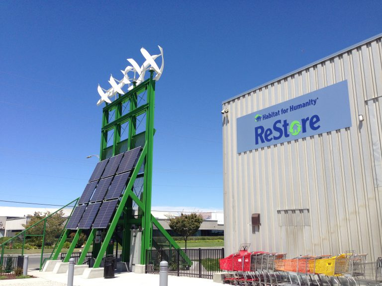

Projects

 |
Bently Reserve |
A listed national historical building in the heart of the San Francisco financial district, the Bently Reserve has a lot of stories to tell. It was built as a federal bank and has since seen a number of uses. In 2006 the new owners decided to retrofit the existing infrastructure and upgrade most of the building systems such as HVAC, lighting, access control and the fire life safety systems. Energy efficiency and sustainability measures, including LEED certification, are part of the ongoing upgrade efforts. GRD|energy is assisting the design team and the owner to bring an integrated solution for some of these systems and to commission all critical core and shell systems. New tenants include the Smith Group, Energy Foundation and the San Francisco Bar Association. http://bentlyreserve.com |
 |
Chukchansi Gold Casino |
Located in the central valley in Coarsegold CA, the casino was opened in 2003 and is undergoing a substantial expansion to accommodate the increased demand for lodging, gaming and entertaining. GRD|energy is assisting the owner and the design and construction team to commission the energy systems ensuring that all of the owners guidelines will be met. |
 |
Skyline College |
GRD|Energy has provided Cx, RCx and other sustainability and energy consulting services for several buildings at the Skyline College Campus in San Bruno, ranging from gymnasiums to teaching laboratories. The latest new construction building is the student union building in the heart of the campus. |
 |
Cañada College |
The new flagship building for Canada College opened in 2007. The new 70,000 sf facility is currently hosting the library, student services and some classrooms. The building was designed to maximize daylight but minimize the heat effect of the direct sunlight on the glazing. GRD Energy was hired during construction to commission all energy systems of the new building. |
 |
Postal Distribution Center |
In an ongoing effort to reduce energy consumption in federal facilities, the Postal Service hired a national ESCO firm to assist them in upgrading and retrofitting energy systems, including a 910 kW solar system, new energy management system and a number of mechanical and lighting upgrades. GRD|energy was engaged to make certain that the proposed ECM’s achieved their goals by commissioning some of the energy system involved. The projects resulting energy reductions are equivalent to the elimination of 7,400 tons of carbon dioxide emissions annually, about the same as could be converted by planting more than 2,000 acres of trees. |
 |
Data Center |
The facility is located in Tucson Arizona and was hosting a third phase expansion of a datacenter. New 46 kV service was provided to power the third phase build out independent from the previous phase 1&2 projects. The phase 3 datacenter has about 22,000 sf of raised data floor and is designed as a Tier 2/3 facility |
|  | San José Environmental Innovation Center |
The San José Environmental Innovation Center (EIC) is a first-of-its-kind “green enterprise” facility that houses services for residents and clean tech entrepreneurs – all working for a healthy environment and economy in our region. With the help of the federal New Markets Tax Credit, San José transformed a marginal property into a showcase of energy- and water-efficient practices. The Environmental Services Department is the building owner and tenant coordinator. The EIC and services offered by its tenants contribute to San José’s Green Vision goals. These goals include: diverting waste from landfills, creating clean tech jobs, retrofitting buildings to be green, and replacing streetlights with smart zero emission lights. Other benefits accrue from the services offered by the EIC’s three tenants. |
 |
Rinconada Library |
The Rinconada Library was upgraded and additional community service spaces were added during the current renovation project. The project is tracking to receive LEED Gold certification. A ground source based heat pump system provides heating and cooling for all spaces. Radiant floors throughout the main library portion and radiant ceilings and active chilled beams in selected spaces, provide comfortable and quiet spaces with minimal energy consumption. |
 |
Mitchell Park Community Center |
The Mitchell Park Community Center was designed to accommodate community functions and library services within a highly energy efficient and welcoming facility and with LEED Platinum, received the highest available LEED certification. The design team was using renewable energy such as photovoltaics and thermal solar hot water systems to reduce power and natural gas consumption. The building is already piped for reclaimed water to reduce the potable water use for industrial and landscape use. An innovative Night Sky cooling system provides pre-cooled water for the HVAC system, reducing the electric consumption for the chiller system. An extensive metering systems for consumption and production of utilities can be used to determine existing or future potential for additional reduction in consumption of utilities. |